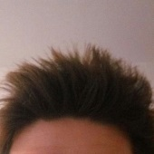

Mario Twitter
Tarantiniano, odia el Dalsy, ama las croquetas. Algo mandón y le encanta el Bloodborne.
Jeremy Twitter
Americano en España, español en América. Ambicioso y luchador desde siempre. Apasionado de los videojuegos, el deporte y pasar buenos ratos con los suyos. Espera, algún día, poder hacer algo por lo que ser recordado.
Óscar
Hola, yo soy Óscar, y molo bastante. En serio, soy muy guay, alto, genial y atractivo. Me gusta dibujar sprites. Espero que disfrutes de este juego tanto como el profesor va a disfrutar suspendiéndonos.
Jose Twitter
Geek. Me gusta programar y por tanto trasnochar. Los videojuegos forman parte de mí desde que tengo uso de razón, así que si te ha gustado nuestra pequeña creación, escríbeme un tweet y me alegrarás el día.
Dani Twitter
Un chaval tinerfeño, sin acento que lo reafirme, que estudia para crear grandes y pequeños videojuegos. De esos que, de vez en cuando, te arrancan una sonrisa de oreja a oreja, te hacen llorar casi sin querer, o te transportan a mundos mágicos que desearías poder recorrer una y otra vez, como si fuera la primera.Aunque si estás aquí, seguramente ya sepas de qué sensaciones te hablo.
Kai Twitter
Aprendiz de desarrollador de videojuegos con corazón de escritor. Pero sobre todo jugón, de esos que los olores les recuerdan videojuegos.Desperté en mitad de la Guerra de las Llaves Espadas y supe que la tarta era una mentira. Desde entonces no fui el mismo, mi imaginación se apoderó de mi cuerpo. Me convertí en el monstruo que llevo dentro.
“Las lágrimas limpian la mirada, pero mejor si son de alegría por este sueño”.